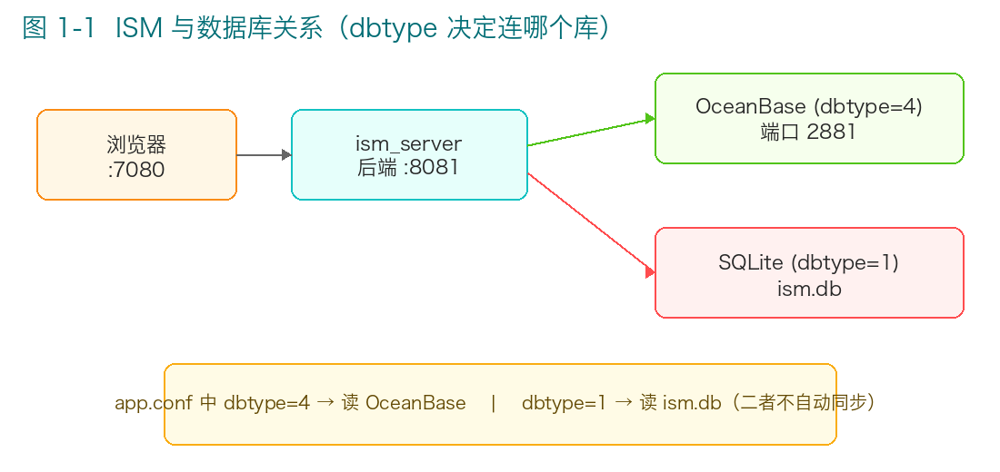
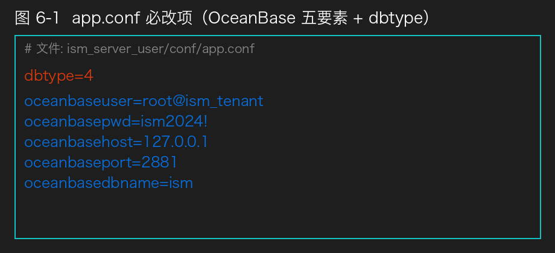
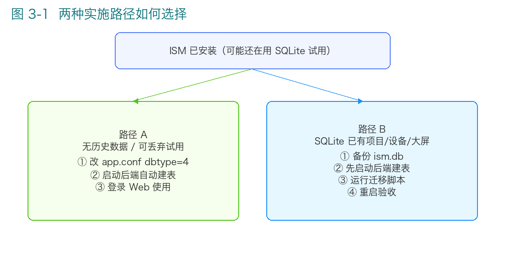
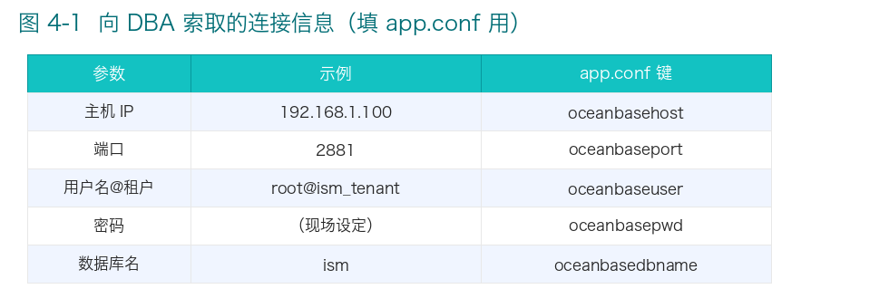
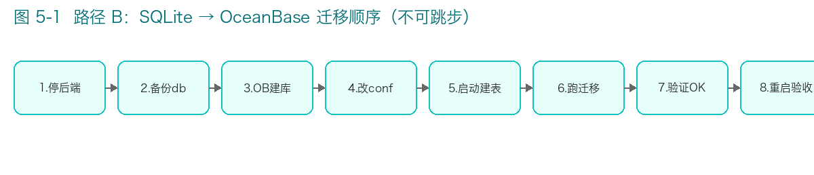
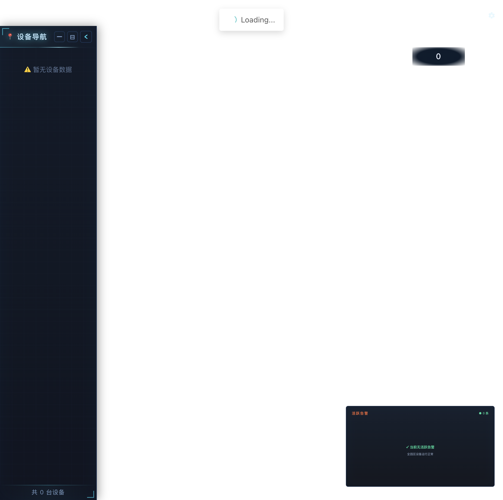

离线部署与 SQLite 切换操作指南（图文并茂）
ISM V3.01.RC07 · 零界X Web 组态软件
文档生成日期：2026-06-18
适用对象：客户现场离线环境、已安装或计划安装 OceanBase，操作人员为非开发新手。
软件版本参考：ISM V3.01.RC07 · 后端 ism_server · 前端端口 7080 · 后端端口 8081
相关文件：ism_server_user/conf/app.conf、scripts/migrate_sqlite_to_oceanbase.py
图文并茂 PDF 版：docs/ISM-OceanBase部署与切换指南.pdf（重新生成：python3 scripts/build_oceanbase_guide_pdf.py）

ISM 出厂配置里，业务数据可以落在不同数据库上。配置文件里用 dbtype 一个数字决定连哪种库：
| dbtype | 数据库 | 典型场景 |
|---|---|---|
| `0` | MySQL | 通用 MySQL |
| `1` | **SQLite**（文件 `data/db/ism.db`） | 单机试用、小项目、离线演示 |
| `2` | PostgreSQL | 少数定制环境 |
| `3` | 达梦 DM | 国产库（部分平台不支持） |
| **`4`** | **OceanBase（MySQL 兼容模式）** | **生产推荐、航信机房等项目** |
客户现场已有 OceanBase 时，应把 dbtype 改为 4，并填写 OceanBase 的连接账号。
ISM 把 OceanBase 当作 MySQL 兼容协议 来访问（驱动与 MySQL 相同），默认：
用户名@租户名，例如 root@ism_tenantism（可改，须与 app.conf 一致）重要：改成 OceanBase 之后，不要再用 SQLite 文件ism.db查业务数据。后台、脚本、备份都会读app.conf里的dbtype；若仍打开ism.db，会看到旧数据或空数据，容易误判「系统坏了」。

ISM安装目录/
└── ism_server_user/
├── conf/app.conf ← 数据库类型与连接参数（必改）
├── ism_server ← 后端程序
└── data/db/ism.db ← 仅 dbtype=1 时使用
请在现场实施前逐项确认：
| 序号 | 准备项 | 说明 |
|---|---|---|
| 1 | OceanBase 已安装并可登录 | 向 DBA 索取：**IP、端口、租户、用户名、密码**；或按 §4.2 用 Docker 单机版 |
| 2 | 网络可达 | 运行 `ism_server` 的机器能 **ping / telnet** 到 OceanBase 端口（默认 2881） |
| 3 | 空库或专用库 | 建议单独建库 **`ism`**，不要与其他业务混用 |
| 4 | ISM 后端已解压/编译 | 存在 `ism_server_user/ism_server` 可执行文件 |
| 5 | Python 3 + pymysql（仅迁移时需要） | 路径 B 从 SQLite 迁数据时需要：`pip install pymysql` |
| 6 | 备份习惯 | 改配置、迁库前**先停后端**，再备份 `ism.db` 或 OceanBase 库 |
| 7 | 默认登录账号 | Web：`admin` / `123456`（见 §7.3，与数据库类型无关） |
离线包建议一并携带（若客户无公网）：
oceanbase/oceanbase-ce（若用容器）pymysql wheel
┌─────────────────────────────────────┐
│ ISM 已安装，当前 dbtype=1 (SQLite) │
└─────────────────┬───────────────────┘
│
┌───────────────────────┴───────────────────────┐
│ │
还没有业务数据 / 可丢弃试用数据 已在 SQLite 里录了
│ 项目、设备、大屏 │
▼ ▼
【路径 A】 【路径 B】
直接改 app.conf → dbtype=4 先备份 ism.db → 迁库脚本
启动后端自动建表 + 空库或后续导入 → 再改 dbtype=4 → 重启
| 场景 | 推荐路径 |
|---|---|
| 第一次上线，客户只有 OceanBase，没有 SQLite 历史数据 | **路径 A** |
| 在笔记本/试用机用 SQLite 配过项目，现在要迁到服务器 OceanBase | **路径 B** |
| 客户 OceanBase 里已有 DBA 建好的空库 `ism` | **路径 A**（启动后端自动建表） |

请 DBA 提供或自行记录：
| 参数 | 示例 | 对应 app.conf 键 |
|---|---|---|
| 主机 IP | `192.168.1.100` 或 `127.0.0.1` | `oceanbasehost` |
| 端口 | `2881` | `oceanbaseport` |
| 租户名 | `ism_tenant` | 用户名里 `@` 后面部分 |
| 用户名 | `root` | 与租户拼成 `root@ism_tenant` → `oceanbaseuser` |
| 密码 | （现场设定） | `oceanbasepwd` |
| 数据库名 | `ism` | `oceanbasedbname` |
适用于内网有一台 Linux 服务器、可运行 Docker 的情况。内存建议 ≥ 8GB。
① 导入镜像（离线）
# 在有网络的机器上
docker pull oceanbase/oceanbase-ce:latest
docker save oceanbase/oceanbase-ce:latest -o oceanbase-ce.tar
# 到现场服务器
docker load -i oceanbase-ce.tar
② 创建并启动容器（与项目 start.sh 一致）
docker run -d --name oceanbase \
--ulimit nofile=65536:65536 --ulimit nproc=65536:65536 \
-p 2881:2881 \
-e MODE=mini \
-e OB_MEMORY_LIMIT=8G \
-e OB_DATAFILE_SIZE=10G \
-e OB_LOG_DISK_SIZE=5G \
-e OB_CLUSTER_NAME=ism_cluster \
-e OB_TENANT_NAME=ism_tenant \
-e OB_TENANT_PASSWORD='ism2024!' \
oceanbase/oceanbase-ce:latest
③ 等待就绪（约 1～3 分钟）
docker logs -f oceanbase
# 另开终端测试：
docker exec oceanbase obclient -h 127.0.0.1 -P 2881 \
-uroot@ism_tenant -p'ism2024!' -e "SELECT 1"
看到 1 即表示 SQL 端口可用。
④ 创建业务库 ism
docker exec oceanbase obclient -h 127.0.0.1 -P 2881 \
-uroot@ism_tenant -p'ism2024!' -e \
"CREATE DATABASE IF NOT EXISTS ism DEFAULT CHARACTER SET utf8mb4 COLLATE utf8mb4_bin;"
若客户是已有 OceanBase 集群，把上述 SQL 交给 DBA 在目标租户下执行即可，不必 Docker。
按 [§6](#6-修改-appconf核心步骤) 修改配置，然后按 [§7](#7-首次启动后端与验证) 启动后端。
路径 A 不需要运行 SQLite 迁移脚本。
适用：已在 dbtype=1 下配置过项目/设备/大屏，需要把 ism.db 里的数据 搬到 OceanBase。

1. 停止 ism_server
2. 备份 ism.db
3. 确保 OceanBase 已就绪，且已 CREATE DATABASE ism
4. 临时改 app.conf：dbtype=4，填好 oceanbase* 参数
5. 启动 ism_server 一次 → 自动建表（AutoMigrate）→ 看到「系统表检查完成」后停止
6. 运行 python3 scripts/migrate_sqlite_to_oceanbase.py
7. 确认迁移验证全部为 OK
8. 再次启动 ism_server（保持 dbtype=4）
9. 登录 Web 核对项目、设备、大屏
为什么先启动一次后端？
迁移脚本只拷贝数据，表结构由 ISM 后端首次连接时自动创建。若跳过第 5 步，脚本会提示「表在 OceanBase 中不存在」并跳过，导致空库。
步骤 1：停止后端
# 若用 start.sh 启动，Ctrl+C 或：
pkill -f ism_server
步骤 2：备份 SQLite
cd ISM安装目录/ism_server_user
cp data/db/ism.db data/db/ism.db.bak.$(date +%Y%m%d%H%M)
ls -lh data/db/ism.db*
步骤 3：确认 OceanBase 与空库 ism
同 [§4.2 ④](#42-若现场用-docker-单机-oceanbase无现成集群时) 或 DBA 建库。
步骤 4～5：改 app.conf 并首次启动建表
见 [§6](#6-修改-appconf核心步骤)、[§7.1](#71-启动命令)。
步骤 6：运行迁移脚本
先编辑脚本顶部的连接参数（若与客户环境不一致）：
文件：scripts/migrate_sqlite_to_oceanbase.py
OCEANBASE_CONFIG = {
"host": "127.0.0.1", # 改成客户 OB 地址
"port": 2881,
"user": "root@ism_tenant", # 改成客户账号
"password": "ism2024!", # 改成客户密码
"database": "ism",
"charset": "utf8mb4",
}
在项目根目录执行：
cd ISM安装目录
python3 scripts/migrate_sqlite_to_oceanbase.py
# 出现确认提示时输入 yes
# 或非交互：python3 scripts/migrate_sqlite_to_oceanbase.py --yes
脚本会：
步骤 7：看验证结果
末尾应类似：
OK | user | SQLite: 1 | OceanBase: 1
OK | project_lists | SQLite: 3 | OceanBase: 3
...
迁移成功！所有表数据一致。
若有 MISMATCH，不要上线，联系技术支持并保留日志。
步骤 8～9：保持 dbtype=4，重启并验收
见 [§7](#7-首次启动后端与验证)、[§8](#8-启动完整-ism-服务)。
cd ISM安装目录/ism_server_user/conf
cp app.conf app.conf.bak.$(date +%Y%m%d) # 先备份
vi app.conf # 或用记事本 / nano 编辑
找到并修改以下行（等号两边不要加空格）：
# ① 数据库类型：OceanBase 必须为 4
dbtype=4
# ② OceanBase 连接五要素（按客户实际填写）
oceanbaseuser=root@ism_tenant
oceanbasepwd=ism2024!
oceanbasehost=127.0.0.1
oceanbaseport=2881
oceanbasedbname=ism
| 配置项 | 含义 | 常见错误 |
|---|---|---|
| `dbtype` | `4` = OceanBase；若仍为 `1` 则继续用 SQLite 文件 | 改了 oceanbase* 但忘记改 dbtype |
| `oceanbaseuser` | 必须带 `@租户`，不能只写 `root` | 登录报 Access denied |
| `oceanbasepwd` | 租户用户密码 | 与 MySQL 的 `mysqlpwd` 无关 |
| `oceanbasehost` | OB 服务器 IP；Docker 在本机则 `127.0.0.1` | 填错网段连不上 |
| `oceanbaseport` | 默认 2881，以 DBA 为准 | 与 MySQL 3306 混淆 |
| `oceanbasedbname` | 业务库名，须已 `CREATE DATABASE` | 库不存在会启动失败 |
以下与 OceanBase 无直接关系，一般保持默认即可：
httpport=8081 — 后端 API 端口mysqluser / mysqlpwd 等 — 仅 dbtype=0 时使用history_keep_days=7 — 历史数据保留天数
grep -E '^dbtype=|^oceanbase' ism_server_user/conf/app.conf
期望输出：
dbtype=4
oceanbaseuser=root@ism_tenant
oceanbasepwd=...
oceanbasehost=...
oceanbaseport=2881
oceanbasedbname=ism
必须在 ism_server_user 目录下启动（相对路径 data/ 才正确）：
cd ISM安装目录/ism_server_user
./ism_server
或使用项目根目录脚本（会自动检查 dbtype=4 时 Docker 版 OceanBase）：
cd ISM安装目录
./start.sh backend
正在连接数据库,请稍等......
数据库连接成功
正在检查系统表,请稍等......
系统表检查完成,耗时:...
http server Running on http://:8081
若出现 panic: 数据库连接失败！，跳到 [§10 FAQ](#10-常见问题-faq)。

# 命令行测试（密码为 MD5(123456)）
curl -s -X POST http://127.0.0.1:8081/login \
-H 'Content-Type: application/json' \
-d '{"Username":"admin","password":"e10adc3949ba59abbe56e057f20f883e"}'
返回 "code":1000 且含 "token" 即 API 正常。
浏览器访问：http://<服务器IP>:7080/#/login，账号 admin / 123456。
docker exec oceanbase obclient -h 127.0.0.1 -P 2881 \
-uroot@ism_tenant -p'ism2024!' ism \
-e "SHOW TABLES; SELECT COUNT(*) FROM project_lists;"
或用客户提供的 OB 客户端工具执行相同 SQL。
| 顺序 | 服务 | 命令 / 说明 |
|---|---|---|
| 1 | OceanBase | `docker start oceanbase` 或集群由 DBA 保障 |
| 2 | 后端 | `cd ism_server_user && ./ism_server` |
| 3 | 前端 | `cd ism-front-end-v2 && npx vue-cli-service serve --port 7080` |
大项目前端编译需较大内存，可参考：
NODE_OPTIONS="--max-old-space-size=20480 --openssl-legacy-provider" \
npx vue-cli-service serve --port 7080
cd ISM安装目录
./start.sh all
当 dbtype=4 时，脚本会先检查/启动名为 oceanbase 的 Docker 容器。
ism_server 建议分机或分容器，并做好磁盘与内存监控app.conf 后必须重启 ism_server 才生效
cd ISM安装目录
python3 scripts/backup_project.py --project-uuid <项目UUID>
脚本会自动读取 app.conf 的 dbtype，在 OceanBase 下用 pymysql 连接，无需手工改脚本。
若需要把 OceanBase 数据拷到无 OB 的环境演示：
# 环境变量可覆盖连接
export OB_HOST=127.0.0.1
export OB_PORT=2881
export OB_USER='root@ism_tenant'
export OB_PASSWORD='ism2024!'
export OB_DATABASE=ism
python3 scripts/export_db_to_sqlite.py
# 生成 ism_server_user/data/db/ism.db，再将 app.conf 改为 dbtype=1
详见 docs/cloud-sqlite-deploy.md。
dbtype=1
重启后端即可使用 data/db/ism.db。不会自动同步 OceanBase 里新产生的数据，两边是两套库。
| 检查项 | 操作 | |
|---|---|---|
| OceanBase 是否运行 | `docker ps \ | grep oceanbase` 或问 DBA |
| 端口是否通 | `telnet | |
| 账号格式 | 必须是 `用户@租户`，如 `root@ism_tenant` | |
| 库是否存在 | 执行 `SHOW DATABASES LIKE 'ism'` | |
| 密码特殊字符 | 若含 `@#!` 等，与 DBA 确认是否需要转义 |
原因：app.conf 已是 dbtype=4，Web 读的是 OceanBase，而数据还在 ism.db。
处理：按 [§5 路径 B](#5-路径-b先在-sqlite-试用再迁到-oceanbase) 做迁移；或把 dbtype 改回 1 仅用于核对旧库（临时）。
原因：未先启动过后端建表。
处理：dbtype=4 下启动 ism_server 一次，看到「系统表检查完成」后停止，再跑迁移脚本。
ISM 密码链路固定：前端 MD5 → 后端 bcrypt。默认 admin/123456 与数据库类型无关。
若 DBA 手工改过 user 表，需按规范写入 bcrypt(MD5(明文密码))，不要随意 UPDATE password。
OceanBase 环境下大量 Modbus 设备并发采集会占用连接。建议：
is_enable）/tmp/ism_be.log 或后台日志完全正常。只需把 oceanbasehost、oceanbaseport、oceanbaseuser、oceanbasepwd 改成 DBA 提供的值，dbtype 仍为 4。
app.conf + 启动后端即可。
dbtype=4
oceanbaseuser=root@ism_tenant
oceanbasepwd=请填写现场密码
oceanbasehost=127.0.0.1
oceanbaseport=2881
oceanbasedbname=ism
httpport=8081
enablehttp=true
runmode=prod
# 查看当前数据库类型
grep '^dbtype=' ism_server_user/conf/app.conf
# 测试 OceanBase 连接（Docker 示例）
docker exec oceanbase obclient -h 127.0.0.1 -P 2881 \
-uroot@ism_tenant -p'密码' -e "SELECT 1"
# 创建库
docker exec oceanbase obclient -h 127.0.0.1 -P 2881 \
-uroot@ism_tenant -p'密码' -e "CREATE DATABASE IF NOT EXISTS ism;"
# 备份 SQLite（迁移前）
cp ism_server_user/data/db/ism.db ism_server_user/data/db/ism.db.bak
# SQLite → OceanBase 迁移
python3 scripts/migrate_sqlite_to_oceanbase.py --yes
# 启动后端
cd ism_server_user && ./ism_server
# 测试登录 API
curl -s -X POST http://127.0.0.1:8081/login \
-H 'Content-Type: application/json' \
-d '{"Username":"admin","password":"e10adc3949ba59abbe56e057f20f883e"}'
| 文档 | 内容 |
|---|---|
| `docs/ISM-手工操作指南.md` | 登录、建项目、模型、设备、大屏 |
| `docs/cloud-sqlite-deploy.md` | OceanBase → SQLite 反向导出 |
| `start.sh` | 含 Docker 版 OceanBase 创建示例 |
文档维护：与 ism_server_user/conf/app.conf、scripts/migrate_sqlite_to_oceanbase.py 保持一致；客户现场账号密码请勿写入版本库，仅保存在现场实施记录中。